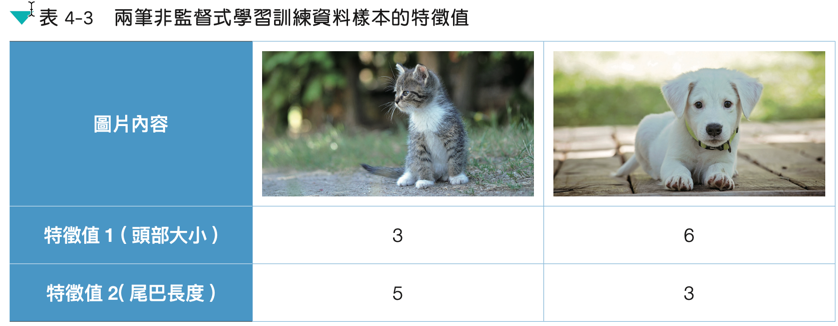
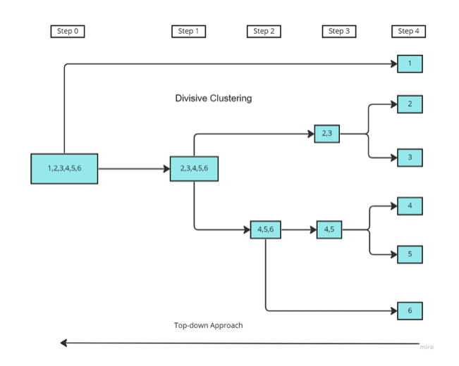
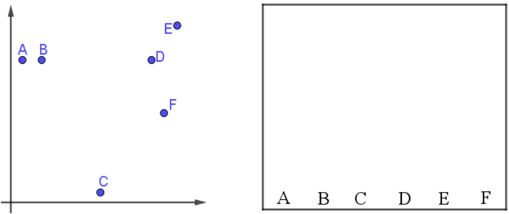
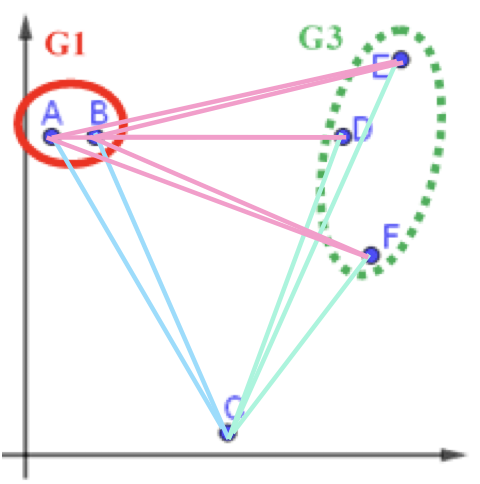
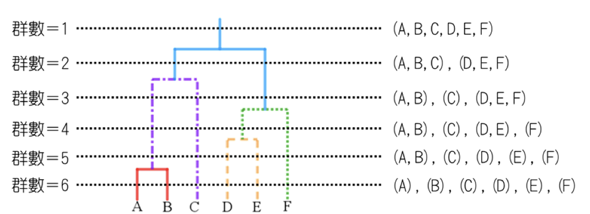
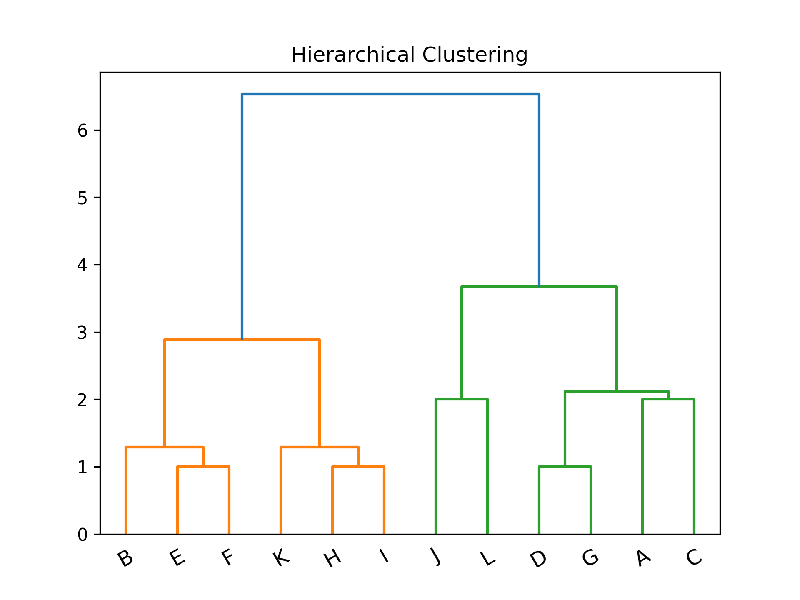

非監督式學習
Table of Contents

1. 非監督式學習
1.1. 目的
非監督式學習演算法嚐試學習 資料的基礎結構 ，而非 做出預測 。例如：
- 將網站訪客進行分類: 40%為男性、愛看漫畫、通常晚上造訪網站….
將一堆圖片分類：cat、automobile、truck、frog、ship…

Figure 1: Caption
1.2. 非監督式學習的任務
如何協助儘量保留非監督式學習資料的重要特徵以利將來進行有效辨識1：
- 降維(dimensionality reduction): 目的是在不損失過多資訊的前提下簡化資料，將多個特徵合併成一個。例如，汽車的里程數與車齡就有合併的依據。
- 異常檢測(Anamaly Detection): 例如，找出不尋常的信用卡交易以防止詐騙、找出製程中有缺陷的產品、將資料組中的離群值挑出來再傳給另一個演算法
新穎檢測(Novelty Detection): 檢測與訓練組中所有實例(instance)看起來不一樣的新實例。前提是訓練組的數據非常乾淨（clean）。例如，有1000張狗的照片，裡面只有10張吉娃娃，則Novelty就 不應該 把這10張標為novelty，而是找出裡面不小心誤放的貓的照片。

Figure 2: Caption
- 關聯規則學習(association rule learning): 超市中售出貨物間的關連，可以將常常一起買的物品擺近一點
2. 非監督式學習的常見演算法
2.1. 分群(clustering)
聚類(集群)
- K-Means
- DBSCAN
- 階層式分群分析(Hierarchical Cluster Analysis, HCA)
2.2. 異常檢測與新穎檢測
- One-class SVM
- 孤立森林(Isolation Forest)
2.3. 視覺化與降維
- 主成分分析(Principal Component Analysis, PCA)
- kernel PCA
- 局部線性嵌入法(Locally Linear Embedding, LLE)
- t-隨機隣近嵌入法(t-Distributed Stochastic Neighbor Emgedding, t-SNE)
2.4. 降維
There are two major branches of dimensionality reduction. The first is known as linear projection, which involves linearly projecting data from a high- dimensional space to a low-dimensional space. This includes techniques such as2:
- principal component analysis
- singular value decomposition
- random projection.
The second is known as manifold learning, which is also referred to as nonlinear dimensionality reduction. This involves techniques such as2:
- isomap: which learns the curved distance (also called the geodesic distance) between points rather than the Euclidean distance
- multidimensional scaling (MDS)
- locally linear embedding (LLE)
- t-distributed stochastic neighbor embedding (t-SNE)
- dictionary learning
- random trees embedding
- independent component analysis
維度縮減演算法(dimensionality reduction algorithm)將原始的高維度輸入資料映射到一個低維度空間，同時過濾掉與整體資料不那麼相關的特徵，並儘可能保留資料中令人感興趣的特徵。主要有兩個分支：線性投影、非線性投影:
2.4.1. 線性投影
- 主成分分析(Principal component analysis, PCA)
PCA有數種變形：mini-batch變形式PCA(incremental PCA)、非線性變形(kernel PCA)、稀疏變形(sparse PCA)
- 奇異值分解(Singular value decomposition, SVD)
降低原來特徵所組成的矩陣的秩（rank)，使得原來的矩陣可以使用擁有較小的秩的矩陣所組成的線性組合來表示。
- 隨機投影(Random projection)
由高維投影至低維空間，但同時保留點與點間的矩離，可以使用隨機高斯矩陣（random Gaussian matrix)或隨機稀疏矩陣(random sparse matrix)來實現。
2.5. 關聯規則學習
- 先驗
- Eclat
3. 聚類(集群)
- 任務: grouping objects together based on similarity.
- 應用:
- 在信用卡詐欺偵測中，聚類可以將詐欺交易分組在一起，將其與正常交易分開。
- 如果我們的資料集中的觀測值只有幾個標籤，我們可以先使用聚類對觀測值進行分組（不使用標籤）。 然後，我們可以將少數標記觀測值的標籤轉移到同一組內的其餘觀測值。 這是遷移學習的一種形式，也是機器學習中一個快速發展的領域。
3.1. K-Means
將n個點劃分到K個聚落中，如此一來每個點都屬於離其最近的聚落中心所對應之聚落，以之作為分群的標準。例如：
Figure 3: scikit-learn blobs
3.1.1. K-Means原理
八張未標註動物名稱(標籤)的照片，每張照片有兩個特徵值

Figure 4: 資料庫樣本
八張照片的特徵分佈如下

Figure 5: 待處理資料
K-means 演算法執行步驟如下:
- 決定K值
K 值指的是現有訓練資料(八張 照片)要分成的群數，此處 K 值 為 2。
- 選定K個中心點
任意選定 K 個(K=2)中心點，在實際的程式實作可以亂數隨機 產生這 K 個資料點。如圖6所示，隨機指定的兩群資料點的中心點為(5，5)、(6，9)。

Figure 6: 標題
- 將資料點分群
- 為 K 個群裡的資料點找出新中心點
依前一步驟的分類，此 8 張資料點已分為兩群，接下來就為這兩群資料點找出各自的新中心點，計算方式如下:
- 新★X值: 2+3+4+6+7+9 =5.17
- 新★Y值: 6+5+8+3+6+4 =5.33
- 新★X值:1+8=4.50
- 新★Y值:9+8=8.50

Figure 10: 標題
- 重覆步驟 (3)、(4) 進行下一輪的分群，直到分群結果不再變化
接下來就繼續計算各點到新中心點★(5.17, 5.33)、★(4.50, 8.50)的距離、依新 的距離重新對資料點進行分群(即步驟 3)，再求出新的中心點(即步驟 4)，如此重覆不斷進行，直到分群結果不再變動即告完成。

3.1.2. K-Means實作:隨機數字 sklearn
# 隨機生成100個(x, y) import pandas as pd data = { 'x': [25, 34, 22, 27, 33, 33, 31, 22, 35, 34, 67, 54, 57, 43, 50, 57, 59, 52, 65, 47, 49, 48, 35, 33, 44, 45, 38, 43, 51, 46], 'y': [79, 51, 53, 78, 59, 74, 73, 57, 69, 75, 51, 32, 40, 47, 53, 36, 35, 58, 59, 50, 25, 20, 14, 12, 20, 5, 29, 27, 8, 7] } samples = pd.DataFrame(data) import matplotlib.pyplot as plt from sklearn.cluster import KMeans kmeans = KMeans(n_clusters=3) #預計分為三群，迭代次數由模型自行定義 kmeans.fit(samples) cluster = kmeans.predict(samples) plt.scatter(samples['x'], samples['y'], c=cluster, cmap=plt.cm.Set1) plt.savefig("images/kmeansScatter.png", dpi=300) #plt.show()
Figure 11: scikit-KMeans
3.1.3. K-Means應用: 壓縮影像
1: import numpy as np 2: import matplotlib.pyplot as plt # 需安裝 pillow 才能讀 JPEG 3: from matplotlib import image 4: from sklearn.cluster import MiniBatchKMeans 5: 6: # K 值 (要保留的顏色數量) 7: K = 4 8: 9: # 讀取圖片 10: image = image.imread(r'./images/Photo42.jpg') 11: w, h, d = tuple(image.shape) 12: print(w,h,d) 13: image_data = np.reshape(image, (w * h, d))/ 255 14: print(image_data.shape) 15: print(image_data[0]) 16: print(image_data[1]) 17: # 將顏色分類為 K 種 18: kmeans = MiniBatchKMeans(n_clusters=K, batch_size=10) 19: labels = kmeans.fit_predict(image_data) 20: print(labels[:10]) 21: centers = kmeans.cluster_centers_ 22: print(centers[:10]) 23: # 根據分類將顏色寫入新的影像陣列 24: image_compressed = np.zeros(image.shape) 25: label_idx = 0 26: for i in range(w): 27: for j in range(h): 28: image_compressed[i][j] = centers[labels[label_idx]] 29: label_idx += 1 30: 31: plt.imsave(r'images/compressTest.jpg', image_compressed)
480 640 3 (307200, 3) [0.20784314 0.16078431 0.23921569] [0.21960784 0.17254902 0.25098039] [0 0 0 0 0 0 0 0 2 2] [[0.1535014 0.10980392 0.17348273] [0.59200603 0.36930618 0.34788839] [0.39191176 0.24676471 0.26073529] [0.87828054 0.70392157 0.77662142]]

Figure 12: 以KMeans壓縮圖片色彩
3.2. Hierarchical clustering
階層式分群法(Hierarchical Clustering)透過一種階層架構的方式，將資料層層反覆地進行分裂或聚合，以產生最後的樹狀結構，常見的方式有兩種：
聚合式階層分群法(Agglomerative Clustering): 是一種“bottom-up”的方法，也就是先準備好解決問題可能所需的基本元件或方案，再將這些基本元件組合起來，由小而大最後得到整體。因此在階層式分群法中，就是將每個資料點都視為一個個體，再一一聚合3，如圖134。
/2024-02-11_21-29-19_2024-02-11_21-28-47.png)
Figure 13: Buttom-up
分裂式階層分群法(Divisive Clustering): 是一種“top-down”的方法，先對問題有整體的概念，然後再逐步加上細節，最後讓整體的輪廓越來越清楚。而此法在階層式分群法中，先將整個資料集視為一體，再一一的分裂3，如圖144。

Figure 14: Top-down
3.2.1. 聚合式階層分群法(Agglomerative)
如果採用聚合的方式，階層式分群法可由樹狀結構的底部開始，將資料或群聚逐次合併。
聚合式階層分群步驟：
- 將各個資料點先視為個別的「群」。
- 比較各個群之間的距離，找出距離最短的兩個群。
- 將其合併變成一個新群。
- 不斷重複直到群的數量符合所要求的數目。
- 手動分群
假設現在有6筆資料，分別標記A、B、C、D、E及F，且每筆資料都是一個群。

Figure 15: hierar-1
首先找距離最近的兩個群，在此例為A、B。將A與B結合為新的一群G1，就將這些點分成五群了，其中有四群還是單獨的點。
/2024-02-11_09-06-09_2024-02-11_09-06-00.png)
Figure 16: 標題
接著，再繼續找距離最近的兩個群，依此範例應為D與E，結合為新的一群G2。
/2024-02-11_09-06-59_2024-02-11_09-06-54.png)
Figure 17: 標題
將F與G2合而為新的群G3，這時，這些資料已經被分為三群了。
/2024-02-11_09-18-01_2024-02-11_09-07-48.png)
Figure 18: 標題
- 如何定義兩個群聚之間的距離
- 單一連結聚合
Single-linkage agglomerative algorithm, 群聚與群聚間的距離可以定義為不同群聚中最接近兩點間的距離。
在分屬不同的兩群中，選擇最接近的兩點之距離，即代表兩群間的距離。因此在群與群間進行聚合時，依據此值最小者做為選取下一步結合之對象。
/2024-02-11_10-13-45_2024-02-11_09-23-14.png)
Figure 19: 標題
公式: \( d(G1, G2)=\min\limits_{ A \in G1, B \in G2 } d(A,B)\)
G1、G3與C之間如何聚合？
- G1與C之間的距離d(G1,C)＝d(B,C)
- G3與C之間的距離d(G3,C)＝d(F,C)
- G1與G3之間的距離d(G1,G3)＝d(B,D)
計算完各群間的距離後，可知d(G3,C)為最短距離，因此G3將與C聚合，成為新群G4。
/2024-02-11_10-16-41_2024-02-11_10-16-28.png)
Figure 20: 標題
倘若要再聚合，由於剩下G1與G4，可聚合成為G5。
/2024-02-11_10-17-37_2024-02-11_10-17-28.png)
Figure 21: 標題
- 完整連結聚合
Complete-linkage agglomerative algorithm, 群聚間的距離定義為不同群聚中最遠兩點間的距離，這樣可以保證這兩個集合合併後, 任何一對的距離不會大於 d。
在分屬不同的兩群中，選擇最遠的兩點之距離，即代表兩群間的距離。因此在群與群間進行聚合時，依據此值最小者做為選取下一步結合之對象。
公式: \(d(G1,G2)=\max\limits_{A \in G1, B \in G2}d(A,B)\)
/2024-02-11_10-18-31_2024-02-11_10-18-24.png)
Figure 22: 標題
G1、G3與C之間如何聚合？
- G1與C之間的距離d(G1,C)＝d(A,C)
- G3與C之間的距離d(G3,C)＝d(E,C)
- G1與G3之間的距離d(G1,G3)＝d(A,E)
/2024-02-11_10-20-11_2024-02-11_10-20-03.png)
Figure 23: 標題
計算完各群間的距離後，可知d(G1,C)為最短距離，因此G1將與C聚合，成為新群G4。
倘若要再聚合，由於剩下G3與G4，可聚合成為G5。
/2024-02-11_10-21-08_2024-02-11_10-21-02.png)
Figure 24: 標題
- 平均連結聚合
Average-linkage agglomerative algorithm, 群聚間的距離定義為不同群聚間各點與各點間距離總和的平均。沃德法（Ward’s method）：群聚間的距離定義為在將兩群合併後，各點到合併後的群中心的距離平方和。
在分屬不同的兩群中，各點之距離的平均，即代表兩群間的距離。因此在群與群間進行聚合時，依據此值最小者做為選取下一步結合之對象。 G1、G3與C之間如何聚合？

Figure 25: 標題
公式: \(d(G1,G2)=\frac{\sum_{A \in G1, B \in G2}d(A,B)}{|G1|\times|G2|}\)
- \( d(G1, C)=\frac{d(A,C)+d(B,C)}{2\times1}\)
- \( d(G3, C)=\frac{d(D,C)+d(E,C)+d(F,C)}{3\times1}\)
- \( d(G1, G3)=\frac{d(A,D)+d(A,E)+d(A,F)+d(B,D)+d(B,E)+d(B,F)}{2\times3}\)
- 單一連結聚合
- 決定群數
可以依照使用者的群數需求或相似度要求，來決定要在哪一層時停止聚合資料。若以完整連結的群間距離計算方式為例，圖上的虛線代表不同的群數，端看使用者需求來決定。

Figure 26: 標題
- [課堂任務]聚合式階層分群 TNFSH
- 分群實作
- Agglomerative Clustering Sample
- 分兩群
from sklearn.cluster import AgglomerativeClustering import matplotlib.pyplot as plt import numpy as np # randomly chosen dataset X = np.array([[1, 2], [1, 4], [1, 0], [2, 1], [2, 3], [2, 4], [3, 1], [3, 3], [3, 4], [4, 2], [4, 4], [4, 0]]) clustering = AgglomerativeClustering(n_clusters = 2).fit(X) print('分兩群:',clustering.labels_)
分兩群: [0 1 0 0 1 1 0 1 1 0 1 0]

Figure 28: 分成兩組
- 分三群
clustering = AgglomerativeClustering(n_clusters = 3).fit(X) print('分三群:',clustering.labels_)
分三群: [1 0 1 1 0 0 1 0 0 2 0 2]

Figure 29: 分成三群
- 分四群
clustering = AgglomerativeClustering(n_clusters = 4).fit(X) print('分四群:',clustering.labels_)
分四群: [0 3 0 0 3 3 0 1 1 2 1 2]

Figure 30: 分成四群
- 分兩群
- scipy.cluster.hierarchy[一次分完]
import numpy as np import matplotlib.pyplot as plt import scipy.cluster.hierarchy as sch # randomly chosen dataset X = np.array([[1, 2], [1, 4], [1, 0], [2, 1], [2, 3], [2, 4], [3, 1], [3, 3], [3, 4], [4, 2], [4, 4], [4, 0]]) y = np.array(['A', 'B', 'C', 'D', 'E', 'F', 'G', 'H', 'I', 'J', 'K', 'L']) dis=sch.linkage(X,metric='euclidean', method='ward') #metric: 距離的計算方式 #method: 群與群之間的計算方式，”single”, “complete”, “average”, “weighted”, “centroid”, “median”, “ward” sch.dendrogram(dis, labels = y) plt.title('Hierarchical Clustering') plt.xticks(rotation=30) plt.savefig("images/hierarCluster-1.png", dpi=300) #plt.show()

Figure 31: Hierarchical Clustering
- scipy.cluster.hierarchy[逐步分群]]
import numpy as np import matplotlib.pyplot as plt import scipy.cluster.hierarchy as sch # randomly chosen dataset X = np.array([[1, 2], [1, 4], [1, 0], [2, 1], [2, 3], [2, 4], [3, 1], [3, 3], [3, 4], [4, 2], [4, 4], [4, 0]]) y = np.array(['A', 'B', 'C', 'D', 'E', 'F', 'G', 'H', 'I', 'J', 'K', 'L']) #metric: 距離的計算方式 #method: 群與群之間的計算方式，”single”, “complete”, “average”, “weighted”, “centroid”, “median”, “ward” plt.cla() # Setting the truncate_mode to 'lastp' to see incremental clustering plt.figure(figsize=(10, 20)) for i in range(2, len(y) + 1): plt.subplot( 6, 2, i - 1) labels = y[:i] # Adjusting labels for each step x_step = X[:i] dis=sch.linkage(x_step, metric='euclidean', method='ward') sch.dendrogram(dis, labels=labels, truncate_mode='lastp', p=i) plt.title(f'Step {i}') plt.suptitle('Hierarchical Clustering Steps') plt.tight_layout(rect=[0, 0.03, 1, 0.95]) plt.title('Hierarchical Clustering') plt.xticks(rotation=30) plt.savefig("images/hierarCluster-2.png", dpi=300) #plt.show()

Figure 32: Hierarchical Clustering
- 利用距離決定群數，或直接給定群數。
建構好聚落樹狀圖後，我們可以依照距離的切割來進行分類，也可以直接給定想要分類的群數，讓系統自動切割到相對應的距離。
- 距離切割 所給出的樹狀圖，y軸代表距離，我們可以用特徵之間的距離進行分群的切割。
max_dis=5 clusters=sch.fcluster(dis,max_dis,criterion='distance') import matplotlib.pyplot as plt plt.figure() plt.scatter(X[:,0], X[:,1], c=clusters, cmap=plt.cm.Set1) plt.savefig("images/clusterScatter.png", dpi=300)

Figure 33: Caption
- 直接給定群數 同時，我們也可以像sklearn一樣，直接給定我們所想要分出的群數。
k=4 clusters=sch.fcluster(dis,k,criterion='maxclust') import matplotlib.pyplot as plt plt.figure() plt.scatter(X[:,0], X[:,1], c=clusters, cmap=plt.cm.Set1) plt.savefig("images/clusterScatter-1.png", dpi=300)

Figure 34: Caption
- Agglomerative Clustering Sample
- 如何評估最佳分群數:K
3.2.2. 分裂式階層分群法(Divisive Clustering)
如果採用分裂的方式，則由樹狀結構的頂端開始，將群聚逐次分裂。 Divisive clustering : Also known as top-down approach. This algorithm also does not require to prespecify the number of clusters. Top-down clustering requires a method for splitting a cluster that contains the whole data and proceeds by splitting clusters recursively until individual data have been splitted into singleton cluster.

3.2.3. TNFSH作業: 聚合式分群作業 TNFSH
請利用聚合式分群的模型幫 鳶尾花 分類，
- 將階層圖畫出來
- 將K值設為3，輸出分群結果
3.3. DBSCAN
DBSCAN will group together closely packed points, where close together is defined as a minimum number of points that must exist within a certain distance. If the point is within a certain distance of multiple clusters, it will be grouped with the cluster to which it is most densely located. Any instance that is not within this certain distance of another cluster is labeled an outlier.
In k-means and hierarchical clustering, all points had to be clustered, and outliers were poorly dealt with. In DBSCAN, we can explicitly label points as outliers and avoid having to cluster them. This is powerful. Compared to the other clustering algorithms, DBSCAN is much less prone to the distortion typically caused by outliers in the data. Also, like hierarchical clustering—and unlike k-means—we do not need to prespecify the number of clusters.
3.3.1. 實作
- 讀入資料
'''Main''' import numpy as np import pandas as pd import os, time, pickle, gzip import datetime '''Data Prep''' from sklearn import preprocessing as pp '''Data Viz''' import matplotlib.pyplot as plt import matplotlib as mpl import seaborn as sns color = sns.color_palette() # Load the datasets current_path = os.getcwd() file = os.path.sep.join(['', 'datasets', 'mnist.pkl.gz']) f = gzip.open(current_path+file, 'rb') train_set, validation_set, test_set = pickle.load(f, encoding='latin1') f.close() X_train, y_train = train_set[0], train_set[1] X_validation, y_validation = validation_set[0], validation_set[1] X_test, y_test = test_set[0], test_set[1] # Create Pandas DataFrames from the datasets train_index = range(0,len(X_train)) validation_index = range(len(X_train), len(X_train)+len(X_validation)) test_index = range(len(X_train)+len(X_validation), \ len(X_train)+len(X_validation)+len(X_test)) X_train = pd.DataFrame(data=X_train,index=train_index) y_train = pd.Series(data=y_train,index=train_index) X_validation = pd.DataFrame(data=X_validation,index=validation_index) y_validation = pd.Series(data=y_validation,index=validation_index) X_test = pd.DataFrame(data=X_test,index=test_index) y_test = pd.Series(data=y_test,index=test_index)
- 降維
# Principal Component Analysis from sklearn.decomposition import PCA n_components = 784 whiten = False random_state = 2018 pca = PCA(n_components=n_components, whiten=whiten, \ random_state=random_state) X_train_PCA = pca.fit_transform(X_train) X_train_PCA = pd.DataFrame(data=X_train_PCA, index=train_index) # Log data cwd = os.getcwd() log_dir = cwd+"/datasets/" y_train[0:2000].to_csv(log_dir+'labels.tsv', sep = '\t', index=False, header=False) # Write dimensions to CSV X_train_PCA.iloc[0:2000,0:3].to_csv(log_dir+'pca_data.tsv', sep = '\t', index=False, header=False)
- DBSCAN
# Perform DBSCAN def analyzeCluster(clusterDF, labelsDF): countByCluster = pd.DataFrame(data=clusterDF['cluster'].value_counts()) countByCluster.reset_index(inplace=True,drop=False) countByCluster.columns = ['cluster','clusterCount'] preds = pd.concat([labelsDF,clusterDF], axis=1) preds.columns = ['trueLabel','cluster'] countByLabel = pd.DataFrame(data=preds.groupby('trueLabel').count()) countMostFreq = \ pd.DataFrame(data=preds.groupby('cluster').agg( \ lambda x:x.value_counts().iloc[0])) countMostFreq.reset_index(inplace=True,drop=False) countMostFreq.columns = ['cluster','countMostFrequent'] accuracyDF = countMostFreq.merge(countByCluster, \ left_on="cluster",right_on="cluster") overallAccuracy = accuracyDF.countMostFrequent.sum()/ \ accuracyDF.clusterCount.sum() accuracyByLabel = accuracyDF.countMostFrequent/ \ accuracyDF.clusterCount return countByCluster, countByLabel, countMostFreq, \ accuracyDF, overallAccuracy, accuracyByLabel from sklearn.cluster import DBSCAN eps = 3 min_samples = 5 leaf_size = 30 n_jobs = 4 db = DBSCAN(eps=eps, min_samples=min_samples, leaf_size=leaf_size, n_jobs=n_jobs) cutoff = 99 X_train_PCA_dbscanClustered = db.fit_predict(X_train_PCA.loc[:,0:cutoff]) X_train_PCA_dbscanClustered = \ pd.DataFrame(data=X_train_PCA_dbscanClustered, index=X_train.index, \ columns=['cluster']) countByCluster_dbscan, countByLabel_dbscan, countMostFreq_dbscan, \ accuracyDF_dbscan, overallAccuracy_dbscan, accuracyByLabel_dbscan \ = analyzeCluster(X_train_PCA_dbscanClustered, y_train) overallAccuracy_dbscan # Print overall accuracy print("Overall accuracy from DBSCAN: ",overallAccuracy_dbscan) # Show cluster results print("Cluster results for DBSCAN") countByCluster_dbscan
Overall accuracy from DBSCAN: 0.242 Cluster results for DBSCAN
4. 異常偵測
在現實的狀況下，詐欺的樣式會隨時間改變，如果只依賴訓練集的label來判斷，時間一久效能就會下降。故需要非監督式學習的詐欺偵測系統來協助。
4.1. 準備資料
共有284807筆信用卡交易、其中有492筆詐欺交易(class=1)
# Import libraries '''Main''' import numpy as np import pandas as pd import os, time import pickle, gzip '''Data Viz''' import matplotlib.pyplot as plt import seaborn as sns color = sns.color_palette() import matplotlib as mpl '''Data Prep and Model Evaluation''' from sklearn import preprocessing as pp from sklearn.model_selection import train_test_split from sklearn.metrics import precision_recall_curve, average_precision_score from sklearn.metrics import roc_curve, auc, roc_auc_score import numpy as np import pandas as pd data = pd.read_csv("https://media.githubusercontent.com/media/francis-kang/handson-unsupervised-learning/master/datasets/credit_card_data/credit_card.csv") #data = pd.read_csv("datasets/credit_card.csv") # Count total fraud print("Number of fraudulent transactions:", data['Class'].sum()) # Suppress warnings pd.set_option('mode.chained_assignment', None) # Split to train and test and scale features dataX = data.drop(['Class'],axis=1) dataY = data.loc[:,'Class'].copy() X_train, X_test, y_train, y_test = \ train_test_split(dataX, dataY, test_size=0.33, \ random_state=2018, stratify=dataY) featuresToScale = X_train.columns sX = pp.StandardScaler(copy=True) X_train.loc[:,featuresToScale] = sX.fit_transform(X_train.loc[:,featuresToScale]) X_test.loc[:,featuresToScale] = sX.transform(X_test.loc[:,featuresToScale])
Number of fraudulent transactions: 492
4.2. 定義異常評分函數
降維演算法在縮減維度時，會試圖將重建誤差最小化；對於信用卡交易資料來說，那些難以被塑模的交易會產生最大的重建誤差。
# Calculate reconstruction error def anomalyScores(originalDF, reducedDF): loss = np.sum((np.array(originalDF)-np.array(reducedDF))**2, axis=1) loss = pd.Series(data=loss,index=originalDF.index) loss = (loss-np.min(loss))/(np.max(loss)-np.min(loss)) return loss
4.3. 評估指標：畫圖
使用precision-recall曲線、average precision和auROC做為評估指標。
# Plot results def setPlot(): import matplotlib.pyplot as plt from matplotlib import rcParams rcParams.update({'figure.autolayout': True}) plt.rcParams['font.sans-serif'] = ['Arial Unicode MS'] plt.rcParams['axes.unicode_minus'] = False def plotResults(trueLabels, anomalyScores, returnPreds = False, imgName=''): plt.cla() setPlot() preds = pd.concat([trueLabels, anomalyScores], axis=1) preds.columns = ['trueLabel', 'anomalyScore'] precision, recall, thresholds = \ precision_recall_curve(preds['trueLabel'],preds['anomalyScore']) average_precision = \ average_precision_score(preds['trueLabel'],preds['anomalyScore']) plt.step(recall, precision, color='k', alpha=0.7, where='post') plt.fill_between(recall, precision, step='post', alpha=0.3, color='k') plt.xlabel('Recall') plt.ylabel('Precision') plt.ylim([0.0, 1.05]) plt.xlim([0.0, 1.0]) plt.title('Precision-Recall curve: 平均精確率:{0:0.2f}'.format(average_precision)) plt.savefig('images/'+imgName+'-1.png', dpi=300, bbox_inches='tight') fpr, tpr, thresholds = roc_curve(preds['trueLabel'], \ preds['anomalyScore']) areaUnderROC = auc(fpr, tpr) plt.cla() setPlot() plt.plot(fpr, tpr, color='r', lw=2, label='ROC curve') plt.plot([0, 1], [0, 1], color='k', lw=2, linestyle='--') plt.xlim([0.0, 1.0]) plt.ylim([0.0, 1.05]) plt.xlabel('False Positive Rate') plt.ylabel('True Positive Rate') plt.title('Receiver operating characteristic: 曲線以下面積:{0:0.2f}'.format(areaUnderROC)) plt.legend(loc="lower right") plt.savefig('images/'+imgName+'-2.png', dpi=300, bbox_inches='tight') if returnPreds==True: return preds # View scatterplot def scatterPlot(xDF, yDF, algoName, imgName=''): plt.cla() setPlot() tempDF = pd.DataFrame(data=xDF.loc[:,0:1], index=xDF.index) tempDF = pd.concat((tempDF,yDF), axis=1, join="inner") tempDF.columns = ["First Vector", "Second Vector", "Label"] sns.lmplot(x="First Vector", y="Second Vector", hue="Label", \ data=tempDF, fit_reg=False) ax = plt.gca() ax.set_title("演算法:"+algoName) plt.savefig('images/'+imgName+'.png', dpi=300, bbox_inches='tight')
4.4. PCA異常偵測
使用PCA模型來重建信用卡交易、計算重交的交易與原始交易的差異，那些PCA重建的較差的交易就是異常(可能為詐欺)。對於PCA來說，保留越多主成分、越有助於PCA學習到原始交易的資料結構，但若保留太多主成分，PCA可能太容易重建原始交易，反而讓所有的重建誤差都變小。
# 30 principal components from sklearn.decomposition import PCA n_components = 30 #保留30o固主成分 whiten = False random_state = 2018 pca = PCA(n_components=n_components, whiten=whiten, \ random_state=random_state) X_train_PCA = pca.fit_transform(X_train) X_train_PCA = pd.DataFrame(data=X_train_PCA, index=X_train.index) X_train_PCA_inverse = pca.inverse_transform(X_train_PCA) X_train_PCA_inverse = pd.DataFrame(data=X_train_PCA_inverse, index=X_train.index) scatterPlot(X_train_PCA, y_train, 'AD-PCA', 'AD-PCA') anomalyScoresPCA = anomalyScores(X_train, X_train_PCA_inverse) preds = plotResults(y_train, anomalyScoresPCA, True, 'AD-PCA')

Figure 36: PCA異常偵測/30
Figure 37: PCA異常偵測/30

Figure 38: PCA異常偵測/30
平均精確率不到1%，太差，必須不斷實驗找出最佳的PCA成份(http://bit.ly/2Gd4v7e)
4.4.1. 最後找出27個
# 27 principal components from sklearn.decomposition import PCA n_components = 27 whiten = False random_state = 2018 pca = PCA(n_components=n_components, whiten=whiten, random_state=random_state) X_train_PCA = pca.fit_transform(X_train) X_train_PCA = pd.DataFrame(data=X_train_PCA, index=X_train.index) X_train_PCA_inverse = pca.inverse_transform(X_train_PCA) X_train_PCA_inverse = pd.DataFrame(data=X_train_PCA_inverse, index=X_train.index) scatterPlot(X_train_PCA, y_train, 'AD-PCA', 'AD-PCA1') # View plot anomalyScoresPCA = anomalyScores(X_train, X_train_PCA_inverse) preds = plotResults(y_train, anomalyScoresPCA, True, 'AD-PCA1')

Figure 39: PCA異常偵測/27
Figure 40: PCA異常偵測/27
Figure 41: PCA異常偵測/27
4.4.2. 分析結果
# Analyze results preds.sort_values(by="anomalyScore",ascending=False,inplace=True) cutoff = 350 predsTop = preds[:cutoff] print("Precision: ",np.round(predsTop. \ anomalyScore[predsTop.trueLabel==1].count()/cutoff,2)) print("Recall: ",np.round(predsTop. \ anomalyScore[predsTop.trueLabel==1].count()/y_train.sum(),2)) print("Fraud Caught out of 330 Cases:", predsTop.trueLabel.sum())
Precision: 0.75 Recall: 0.79 Fraud Caught out of 330 Cases: 261
4.5. Sparse PCA異常偵測
# Sparse PCA from sklearn.decomposition import SparsePCA n_components = 27 alpha = 0.0001 random_state = 2018 n_jobs = -1 sparsePCA = SparsePCA(n_components=n_components, \ alpha=alpha, random_state=random_state, n_jobs=n_jobs) sparsePCA.fit(X_train.loc[:,:]) X_train_sparsePCA = sparsePCA.transform(X_train) X_train_sparsePCA = pd.DataFrame(data=X_train_sparsePCA, index=X_train.index) scatterPlot(X_train_sparsePCA, y_train, "Sparse PCA", "AD-SPCA") # View plot X_train_sparsePCA_inverse = np.array(X_train_sparsePCA). \ dot(sparsePCA.components_) + np.array(X_train.mean(axis=0)) X_train_sparsePCA_inverse = \ pd.DataFrame(data=X_train_sparsePCA_inverse, index=X_train.index) anomalyScoresSparsePCA = anomalyScores(X_train, X_train_sparsePCA_inverse) preds = plotResults(y_train, anomalyScoresSparsePCA, True, 'AD-SPCA')

Figure 42: Sparse PCA異常偵測/27
Figure 43: Sparse PCA異常偵測/27

Figure 44: Sparse PCA異常偵測/27
4.5.1. 分析結果
# Analyze results preds.sort_values(by="anomalyScore",ascending=False,inplace=True) cutoff = 350 predsTop = preds[:cutoff] print("Precision: ",np.round(predsTop. \ anomalyScore[predsTop.trueLabel==1].count()/cutoff,2)) print("Recall: ",np.round(predsTop. \ anomalyScore[predsTop.trueLabel==1].count()/y_train.sum(),2)) print("Fraud Caught out of 330 Cases:", predsTop.trueLabel.sum())
Precision: 0.75 Recall: 0.79 Fraud Caught out of 330 Cases: 261
4.6. Kernel PCA異常偵測
# Kernel PCA from sklearn.decomposition import KernelPCA n_components = 27 kernel = 'rbf' gamma = None fit_inverse_transform = True random_state = 2018 n_jobs = 1 kernelPCA = KernelPCA(n_components=n_components, kernel=kernel, \ gamma=gamma, fit_inverse_transform= \ fit_inverse_transform, n_jobs=n_jobs, \ random_state=random_state) kernelPCA.fit(X_train.iloc[:2000]) X_train_kernelPCA = kernelPCA.transform(X_train) X_train_kernelPCA = pd.DataFrame(data=X_train_kernelPCA, \ index=X_train.index) X_train_kernelPCA_inverse = kernelPCA.inverse_transform(X_train_kernelPCA) X_train_kernelPCA_inverse = pd.DataFrame(data=X_train_kernelPCA_inverse, \ index=X_train.index) scatterPlot(X_train_kernelPCA, y_train, "Kernel PCA", "AD-KPCA") # View plot # View plot anomalyScoresKernelPCA = anomalyScores(X_train, X_train_kernelPCA_inverse) preds = plotResults(y_train, anomalyScoresKernelPCA, True, 'AD-KPCA')
Figure 45: Kernel PCA異常偵測/27

Figure 46: Kernel PCA異常偵測/27
Figure 47: Kernel PCA異常偵測/27
4.6.1. 分析結果
# Analyze results preds.sort_values(by="anomalyScore",ascending=False,inplace=True) cutoff = 350 predsTop = preds[:cutoff] print("Precision: ",np.round(predsTop. \ anomalyScore[predsTop.trueLabel==1].count()/cutoff,2)) print("Recall: ",np.round(predsTop. \ anomalyScore[predsTop.trueLabel==1].count()/y_train.sum(),2)) print("Fraud Caught out of 330 Cases:", predsTop.trueLabel.sum()) # Write dimensions to CSV X_train_kernelPCA.loc[sample_indices,:].to_csv('kernel_pca_data.tsv', sep = '\t', index=False, header=False)
Precision: 0.22 Recall: 0.23 Fraud Caught out of 330 Cases: 77
結果不如普通的PCA與sparse PCA
4.7. 稀疏隨機投影異常偵測
# Sparse Random Projection from sklearn.random_projection import SparseRandomProjection n_components = 27 density = 'auto' eps = .01 dense_output = True random_state = 2018 SRP = SparseRandomProjection(n_components=n_components, \ density=density, eps=eps, dense_output=dense_output, \ random_state=random_state) X_train_SRP = SRP.fit_transform(X_train) X_train_SRP = pd.DataFrame(data=X_train_SRP, index=X_train.index) scatterPlot(X_train_SRP, y_train, "Sparse Random Projection", "AD-SRP") # View plot X_train_SRP_inverse = np.array(X_train_SRP).dot(SRP.components_.todense()) X_train_SRP_inverse = pd.DataFrame(data=X_train_SRP_inverse, index=X_train.index) anomalyScoresSRP = anomalyScores(X_train, X_train_SRP_inverse) preds = plotResults(y_train, anomalyScoresSRP, True, "AD-SRP")
Figure 48: 稀疏隨機投影異常偵測
Figure 49: 稀疏隨機投影異常偵測

Figure 50: 稀疏隨機投影異常偵測
4.7.1. 分析結果
# Analyze results preds.sort_values(by="anomalyScore",ascending=False,inplace=True) cutoff = 350 predsTop = preds[:cutoff] print("Precision: ",np.round(predsTop. \ anomalyScore[predsTop.trueLabel==1].count()/cutoff,2)) print("Recall: ",np.round(predsTop. \ anomalyScore[predsTop.trueLabel==1].count()/y_train.sum(),2)) print("Fraud Caught out of 330 Cases:", predsTop.trueLabel.sum()) # Write dimensions to CSV X_train_SRP.loc[sample_indices,:].to_csv('sparse_random_projection_data.tsv', sep = '\t', index=False, header=False)
Precision: 0.21 Recall: 0.22 Fraud Caught out of 330 Cases: 73
4.8. 字典學習異常偵測
# Mini-batch dictionary learning from sklearn.decomposition import MiniBatchDictionaryLearning n_components = 28 alpha = 1 batch_size = 200 max_iter = 200 random_state = 2018 miniBatchDictLearning = MiniBatchDictionaryLearning( \ n_components=n_components, alpha=alpha, batch_size=batch_size, \ max_iter=max_iter, random_state=random_state) miniBatchDictLearning.fit(X_train) X_train_miniBatchDictLearning = \ miniBatchDictLearning.fit_transform(X_train) X_train_miniBatchDictLearning = \ pd.DataFrame(data=X_train_miniBatchDictLearning, index=X_train.index) scatterPlot(X_train_miniBatchDictLearning, y_train, \ "Mini-batch Dictionary Learning", "AD-MBDL") # View plot X_train_miniBatchDictLearning_inverse = \ np.array(X_train_miniBatchDictLearning). \ dot(miniBatchDictLearning.components_) X_train_miniBatchDictLearning_inverse = \ pd.DataFrame(data=X_train_miniBatchDictLearning_inverse, \ index=X_train.index) anomalyScoresMiniBatchDictLearning = anomalyScores(X_train, \ X_train_miniBatchDictLearning_inverse) preds = plotResults(y_train, anomalyScoresMiniBatchDictLearning, True, "AD-MBDL")

Figure 51: 字典學習異常偵測
Figure 52: 字典學習異常偵測

Figure 53: 字典學習異常偵測
4.8.1. 分析結果
# Analyze results preds.sort_values(by="anomalyScore",ascending=False,inplace=True) cutoff = 350 predsTop = preds[:cutoff] print("Precision: ",np.round(predsTop. \ anomalyScore[predsTop.trueLabel==1].count()/cutoff,2)) print("Recall: ",np.round(predsTop. \ anomalyScore[predsTop.trueLabel==1].count()/y_train.sum(),2)) print("Fraud Caught out of 330 Cases:", predsTop.trueLabel.sum()) # Write dimensions to CSV X_train_miniBatchDictLearning.loc[sample_indices,:].to_csv('dictionary_learning_data.tsv', sep = '\t', index=False, header=False)
Precision: 0.43 Recall: 0.46 Fraud Caught out of 330 Cases: 151
4.9. ICA異常偵測
# Independent Component Analysis from sklearn.decomposition import FastICA n_components = 27 algorithm = 'parallel' whiten = 'arbitrary-variance' max_iter = 200 random_state = 2018 fastICA = FastICA(n_components=n_components, \ algorithm=algorithm, whiten=whiten, max_iter=max_iter, \ random_state=random_state) X_train_fastICA = fastICA.fit_transform(X_train) X_train_fastICA = pd.DataFrame(data=X_train_fastICA, index=X_train.index) X_train_fastICA_inverse = fastICA.inverse_transform(X_train_fastICA) X_train_fastICA_inverse = pd.DataFrame(data=X_train_fastICA_inverse, \ index=X_train.index) scatterPlot(X_train_fastICA, y_train, "Independent Component Analysis", "AD-ICA") # View plot anomalyScoresFastICA = anomalyScores(X_train, X_train_fastICA_inverse) preds = plotResults(y_train, anomalyScoresFastICA, True, "AD-ICA")
Figure 54: ICA異常偵測
Figure 55: ICA異常偵測

Figure 56: ICA異常偵測
4.9.1. 分析結果
# Analyze results preds.sort_values(by="anomalyScore",ascending=False,inplace=True) cutoff = 350 predsTop = preds[:cutoff] print("Precision: ",np.round(predsTop. \ anomalyScore[predsTop.trueLabel==1].count()/cutoff,2)) print("Recall: ",np.round(predsTop. \ anomalyScore[predsTop.trueLabel==1].count()/y_train.sum(),2)) print("Fraud Caught out of 330 Cases:", predsTop.trueLabel.sum()) # Write dimensions to CSV # Write dimensions to CSV X_train_fastICA.loc[sample_indices,:].to_csv('independent_component_analysis_data.tsv', sep = '\t', index=False, header=False)
Precision: 0.75 Recall: 0.79 Fraud Caught out of 330 Cases: 261
4.10. 結論
普通PCA與ICA能捕捉到超過80%的已知詐欺，並有80%的精確率，較之監督式學習能捕捉到90%，已十分難得。
5. 降維
- 本例以Colab為執行平台，透過資料的圖形化分佈觀察不同降維的效果。
- 於Colab執行時可以先將例中的savefig()註解掉
5.1. 讀入資料
'''Main''' import numpy as np import pandas as pd import os, time, pickle, gzip import datetime '''Data Prep''' from sklearn import preprocessing as pp '''Data Viz''' import matplotlib.pyplot as plt import matplotlib as mpl import seaborn as sns color = sns.color_palette() # Load the datasets current_path = os.getcwd() file = os.path.sep.join(['', 'datasets', 'mnist.pkl.gz']) f = gzip.open(current_path+file, 'rb') train_set, validation_set, test_set = pickle.load(f, encoding='latin1') f.close() X_train, y_train = train_set[0], train_set[1] X_validation, y_validation = validation_set[0], validation_set[1] X_test, y_test = test_set[0], test_set[1] # Create Pandas DataFrames from the datasets train_index = range(0,len(X_train)) validation_index = range(len(X_train), len(X_train)+len(X_validation)) test_index = range(len(X_train)+len(X_validation), \ len(X_train)+len(X_validation)+len(X_test)) X_train = pd.DataFrame(data=X_train,index=train_index) y_train = pd.Series(data=y_train,index=train_index) X_validation = pd.DataFrame(data=X_validation,index=validation_index) y_validation = pd.Series(data=y_validation,index=validation_index) X_test = pd.DataFrame(data=X_test,index=test_index) y_test = pd.Series(data=y_test,index=test_index) def one_hot(series): label_binarizer = pp.LabelBinarizer() label_binarizer.fit(range(max(series)+1)) return label_binarizer.transform(series) # Define reversal of one-hot encoder function def reverse_one_hot(originalSeries, newSeries): label_binarizer = pp.LabelBinarizer() label_binarizer.fit(range(max(originalSeries)+1)) return label_binarizer.inverse_transform(newSeries) # Create one-hot vectors for the labels y_train_oneHot = one_hot(y_train) y_validation_oneHot = one_hot(y_validation) y_test_oneHot = one_hot(y_test)
317cc734-822d-4872-ae62-5961ec4613ae
5.2. 主成分分析
5.2.1. PCA
PCA會找資料在低維度空間的表示方法，同時盡可能保留資料的變異性。
# Principal Component Analysisva from sklearn.decomposition import PCA n_components = 784 whiten = False random_state = 2018 pca = PCA(n_components=n_components, whiten=whiten, \ random_state=random_state) X_train_PCA = pca.fit_transform(X_train) X_train_PCA = pd.DataFrame(data=X_train_PCA, index=train_index) # Percentage of Variance Captured by 784 principal components print("Variance Explained by all 784 principal components: ", \ sum(pca.explained_variance_ratio_)) # Percentage of Variance Captured by X principal components importanceOfPrincipalComponents = \ pd.DataFrame(data=pca.explained_variance_ratio_) importanceOfPrincipalComponents = importanceOfPrincipalComponents.T print('Variance Captured by First 10 Principal Components: ', importanceOfPrincipalComponents.loc[:,0:9].sum(axis=1).values) print('Variance Captured by First 20 Principal Components: ', importanceOfPrincipalComponents.loc[:,0:19].sum(axis=1).values) print('Variance Captured by First 50 Principal Components: ', importanceOfPrincipalComponents.loc[:,0:49].sum(axis=1).values) print('Variance Captured by First 100 Principal Components: ', importanceOfPrincipalComponents.loc[:,0:99].sum(axis=1).values) print('Variance Captured by First 200 Principal Components: ', importanceOfPrincipalComponents.loc[:,0:199].sum(axis=1).values) print('Variance Captured by First 300 Principal Components: ', importanceOfPrincipalComponents.loc[:,0:299].sum(axis=1).values)
Variance Explained by all 784 principal components: 1.0000000096602508 Variance Captured by First 10 Principal Components: [0.48876238] Variance Captured by First 20 Principal Components: [0.6439802] Variance Captured by First 50 Principal Components: [0.82486093] Variance Captured by First 100 Principal Components: [0.9146585] Variance Captured by First 200 Principal Components: [0.9665007] Variance Captured by First 300 Principal Components: [0.98624885]
由結果看，若將MNIST的原始784個特徵值縮減至300個，仍有近99%的解釋力，即，能捕捉到99%的變異量。PCA能讓我們縮減原始資料的維度，同時保持最多的顯著資訊。
- 2個成分
如果只拿第1、第2個主成分特徵來進行預測，圖示結果如下：
# Define scatterplot function def scatterPlot(xDF, yDF, algoName): tempDF = pd.DataFrame(data=xDF.loc[:,0:1], index=xDF.index) tempDF = pd.concat((tempDF,yDF), axis=1, join="inner") tempDF.columns = ["First Vector", "Second Vector", "Label"] sns.lmplot(x="First Vector", y="Second Vector", hue="Label", data=tempDF, fit_reg=False) ax = plt.gca() ax.set_title("Separation of Observations using "+algoName) # View scatterplot scatterPlot(X_train_PCA, y_train, "PCA") #plt.show() plt.savefig('images/PCA-MNIST-1.png', dpi=300, bbox_inches='tight')

Figure 57: PCA降維
由上圖可以看出PCA光找出最有價值的兩個特徵值就能對大致區分數0~9的不同類別，這在非監督式學習中是大分有用的。當資料集有數百萬個特徵、數十億筆資籵時，PCA可以大幅減少機器學習的訓練時間。
5.2.2. Incremental PCA
當資枓集大到無法載入記憶體時，可以小批次的遞增使用PCA，將資料集逐批送入記憶體，其結果與PCA相仿。
# Incremental PCA plt.cla() from sklearn.decomposition import IncrementalPCA n_components = 784 batch_size = None incrementalPCA = IncrementalPCA(n_components=n_components, batch_size=batch_size) X_train_incrementalPCA = incrementalPCA.fit_transform(X_train) X_train_incrementalPCA = \ pd.DataFrame(data=X_train_incrementalPCA, index=train_index) X_validation_incrementalPCA = incrementalPCA.transform(X_validation) X_validation_incrementalPCA = \ pd.DataFrame(data=X_validation_incrementalPCA, index=validation_index) scatterPlot(X_train_incrementalPCA, y_train, "Incremental PCA") plt.savefig('images/PCA-MNIST-2.png', dpi=300, bbox_inches='tight')

Figure 58: Incremental PCA
5.2.3. Sparse PCA
一般的PCA希望儘量縮小特徵空間，提高空間中資枓點的密度。但有些機器學習可能需要讓資料點的密度更稀疏，此時可使用Sparse PCA，其稀疏程度由aplha控制。
- 計算速度會較慢，故只取10000個樣本訓練
# Sparse PCA plt.cla() from sklearn.decomposition import SparsePCA n_components = 100 alpha = 0.0001 random_state = 2018 n_jobs = -1 sparsePCA = SparsePCA(n_components=n_components, \ alpha=alpha, random_state=random_state, n_jobs=n_jobs) sparsePCA.fit(X_train.loc[:10000,:]) X_train_sparsePCA = sparsePCA.transform(X_train) X_train_sparsePCA = pd.DataFrame(data=X_train_sparsePCA, index=train_index) X_validation_sparsePCA = sparsePCA.transform(X_validation) X_validation_sparsePCA = \ pd.DataFrame(data=X_validation_sparsePCA, index=validation_index) scatterPlot(X_train_sparsePCA, y_train, "Sparse PCA") plt.savefig('images/PCA-MNIST-3.png', dpi=300, bbox_inches='tight')
Figure 59: Sparse PCA
5.2.4. Kernel PCA
非線性投影PCA，透過學習相似度函數(kernel function)，kernel PCA找出大多數資枓點聚集的隱含特徵空間，使用kernel PCA需要設定預期的成分數量、kernel的型態、kernel的係數(gamma)，常見的kernel PCA有radial basis function kernel、RBF kernel。
# Kernel PCA plt.cla() from sklearn.decomposition import KernelPCA n_components = 100 kernel = 'rbf' gamma = None random_state = 2018 n_jobs = 1 kernelPCA = KernelPCA(n_components=n_components, kernel=kernel, \ gamma=gamma, n_jobs=n_jobs, random_state=random_state) kernelPCA.fit(X_train.loc[:10000,:]) X_train_kernelPCA = kernelPCA.transform(X_train) X_train_kernelPCA = pd.DataFrame(data=X_train_kernelPCA,index=train_index) X_validation_kernelPCA = kernelPCA.transform(X_validation) X_validation_kernelPCA = \ pd.DataFrame(data=X_validation_kernelPCA, index=validation_index) scatterPlot(X_train_kernelPCA, y_train, "Kernel PCA") plt.savefig('images/PCA-MNIST-4.png', dpi=300, bbox_inches='tight')
Figure 60: Kernel PCA
5.3. 奇異值分解(Singular Value Decomposition，SVD)
SVD是在機器學習領域廣泛應用的演算法，它不光可以用於降維演算法中的特徵分解，還可以用於推薦系統，以及自然語言處理等領域，目的在減少原始特徵值矩陣的秩，目前幾乎所有封裝好的PCA算法內部採用的都是SVD算法進行特徵值、特徵向量以及K值的求解。
SVD是一種線性代數的技術，它將一個矩陣分解為三個矩陣的乘積，包括一個左奇異向量矩陣、一個對角奇異值矩陣和一個右奇異向量矩陣。
# Singular Value Decomposition plt.cla() from sklearn.decomposition import TruncatedSVD n_components = 200 algorithm = 'randomized' n_iter = 5 random_state = 2018 svd = TruncatedSVD(n_components=n_components, algorithm=algorithm, \ n_iter=n_iter, random_state=random_state) X_train_svd = svd.fit_transform(X_train) X_train_svd = pd.DataFrame(data=X_train_svd, index=train_index) X_validation_svd = svd.transform(X_validation) X_validation_svd = pd.DataFrame(data=X_validation_svd, index=validation_index) scatterPlot(X_train_svd, y_train, "Singular Value Decomposition") plt.savefig('images/SVD-MNIST.png', dpi=300, bbox_inches='tight')

Figure 61: Caption
5.4. Isomap
非線性投影，基本的流形學習方法為isometric mapping，簡稱isomap。Isomap透過計算點與點間的成對距離（曲線距離或捷線距離，而非歐幾里德距離）來學習能代表原始特徵集的一個新低維度embedding。
# Isomap plt.cla() from sklearn.manifold import Isomap n_neighbors = 5 n_components = 10 n_jobs = 4 isomap = Isomap(n_neighbors=n_neighbors, \ n_components=n_components, n_jobs=n_jobs) isomap.fit(X_train.loc[0:5000,:]) X_train_isomap = isomap.transform(X_train) X_train_isomap = pd.DataFrame(data=X_train_isomap, index=train_index) X_validation_isomap = isomap.transform(X_validation) X_validation_isomap = pd.DataFrame(data=X_validation_isomap, \ index=validation_index) scatterPlot(X_train_isomap, y_train, "Isomap") plt.savefig('images/ISOMAP-MNIST.png', dpi=300, bbox_inches='tight')

Figure 62: Isomap
5.5. 局部線性嵌入法(Locally Linear Embedding)
LLE透過以下方式來找出高維資枓中的非線性結構
- 分割資料成為較小的子集（包含數個點的鄰近區域）
- 將每個子集塑模成一個線性的embedding
# Locally Linear Embedding (LLE) from sklearn.manifold import LocallyLinearEmbedding import matplotlib.pyplot as plt plt.cla() n_neighbors = 10 n_components = 2 method = 'modified' n_jobs = 4 random_state = 2018 lle = LocallyLinearEmbedding(n_neighbors=n_neighbors, \ n_components=n_components, method=method, \ random_state=random_state, n_jobs=n_jobs) lle.fit(X_train.loc[0:5000,:]) X_train_lle = lle.transform(X_train) X_train_lle = pd.DataFrame(data=X_train_lle, index=train_index) X_validation_lle = lle.transform(X_validation) X_validation_lle = pd.DataFrame(data=X_validation_lle, index=validation_index) scatterPlot(X_train_lle, y_train, "Locally Linear Embedding") plt.savefig('images/LLE-MNIST.png', dpi=300, bbox_inches='tight')
c257da09-7359-4991-bef2-19ed630c5ce1

Figure 63: 局部線性嵌入法
5.6. t-Distributed Stochastic Neighbor Embedding
t-SNE建立兩個機率分佈來將高維資料點塑模至二維或三維空間，並使在此空間中彼此相似的點靠近、不相似的點疏遠。
# t-SNE plt.cla() from sklearn.manifold import TSNE n_components = 2 learning_rate = 300 perplexity = 30 early_exaggeration = 12 init = 'random' random_state = 2018 tSNE = TSNE(n_components=n_components, learning_rate=learning_rate, \ perplexity=perplexity, early_exaggeration=early_exaggeration, \ init=init, random_state=random_state) X_train_tSNE = tSNE.fit_transform(X_train_PCA.loc[:5000,:9]) X_train_tSNE = pd.DataFrame(data=X_train_tSNE, index=train_index[:5001]) scatterPlot(X_train_tSNE, y_train, "t-SNE") plt.savefig('images/tSNE-MNIST.png', dpi=300, bbox_inches='tight')

Figure 64: t-Distributed Stochastic Neighbor Embedding
5.7. 字典學習
不依賴幾何指標或距離指標，當資料量很大時，嚴格鑽析每個樣本就會消耗大量時間，MiniBatch方過降低計算精度來換取執行時間，但仍能藉由龐大的資料量來取得合理的效能。
# Mini-batch dictionary learning plt.cla() from sklearn.decomposition import MiniBatchDictionaryLearning n_components = 50 alpha = 1 batch_size = 200 max_iter = 1000 random_state = 2018 miniBatchDictLearning = MiniBatchDictionaryLearning( \ n_components=n_components, alpha=alpha, \ batch_size=batch_size, max_iter = max_iter, \ random_state=random_state) miniBatchDictLearning.fit(X_train.loc[:,:10000]) X_train_miniBatchDictLearning = miniBatchDictLearning.fit_transform(X_train) X_train_miniBatchDictLearning = pd.DataFrame( \ data=X_train_miniBatchDictLearning, index=train_index) X_validation_miniBatchDictLearning = \ miniBatchDictLearning.transform(X_validation) X_validation_miniBatchDictLearning = \ pd.DataFrame(data=X_validation_miniBatchDictLearning, \ index=validation_index) scatterPlot(X_train_miniBatchDictLearning, y_train, \ "Mini-batch Dictionary Learning") plt.savefig('images/DIC-MNIST.png', dpi=300, bbox_inches='tight')
/usr/local/lib/python3.11/site-packages/sklearn/decomposition/_dict_learning.py:193: RuntimeWarning: Orthogonal matching pursuit ended prematurely due to linear dependence in the dictionary. The requested precision might not have been met. new_code = orthogonal_mp_gram( /usr/local/lib/python3.11/site-packages/sklearn/decomposition/_dict_learning.py:193: RuntimeWarning: Orthogonal matching pursuit ended prematurely due to linear dependence in the dictionary. The requested precision might not have been met. new_code = orthogonal_mp_gram(
Figure 65: 字典學習
5.8. 獨立成份分析
Independent component analysis
# Independent Component Analysis plt.cla() from sklearn.decomposition import FastICA n_components = 25 algorithm = 'parallel' whiten='arbitrary-variance' max_iter = 1000 random_state = 2018 fastICA = FastICA(n_components=n_components, algorithm=algorithm, \ whiten=whiten, max_iter=max_iter, random_state=random_state) X_train_fastICA = fastICA.fit_transform(X_train) X_train_fastICA = pd.DataFrame(data=X_train_fastICA, index=train_index) X_validation_fastICA = fastICA.transform(X_validation) X_validation_fastICA = pd.DataFrame(data=X_validation_fastICA, \ index=validation_index) scatterPlot(X_train_fastICA, y_train, "Independent Component Analysis") plt.savefig('images/ICA-MNIST.png', dpi=300, bbox_inches='tight')
/usr/local/lib/python3.11/site-packages/sklearn/decomposition/_fastica.py:128: ConvergenceWarning: FastICA did not converge. Consider increasing tolerance or the maximum number of iterations. warnings.warn(

Figure 66: 獨立成份分析
Footnotes:
Hands-On Machine Learning with Scikit-Learn: Aurelien Geron